做出更强的 Skill
从工具使用到 Agent 工程化
把经验、工具、流程和约束封装成可复用能力。
从最小闭环到任务运行时和多 Agent 协作。
分享人：映客研发二组—杜振训
Skill是什么？
Skill管理工具 oh-my-skills
Agent Skill 生态在快速扩张。Claude Code、Codex、OpenClaw、Trae 等工具都支持 SKILL.md 格式。当你有 10 个 Skills 时可以手动维护；当你有 60+ 个 Skills 时，你需要一个系统来管理。- 直接启动 Skill 管理工具。
- 集中查看全部 Skill、启用状态和来源。
- 支持安装、添加、删除、修改、启用和禁用。
- 适合把个人经验、团队规范和常用工具沉淀成可维护资产。
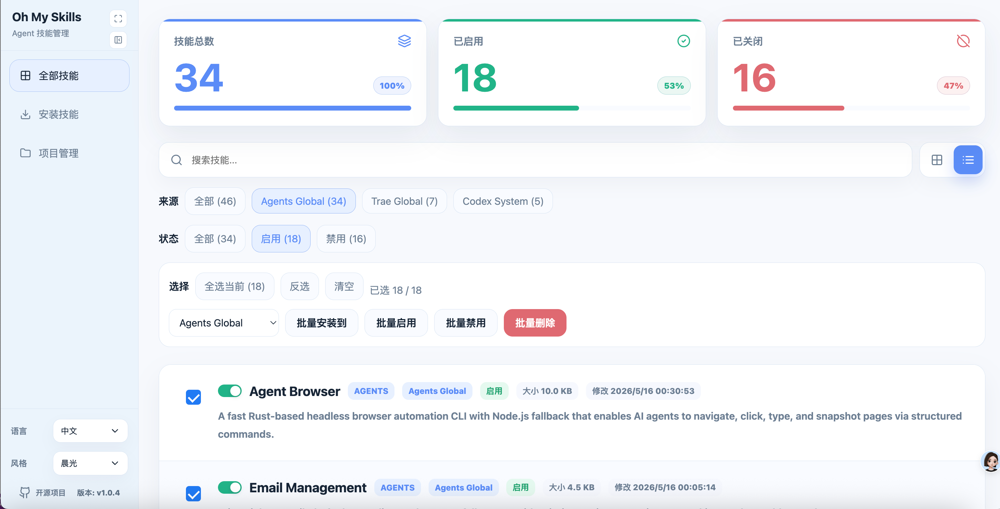
Skill 不只提效，也把复杂工作变成稳定能力
OpenCLI 更像浏览器与 CLI 的枢纽
GitHub：github.com/jackwener/OpenCLI
darwin-skill 优化改进技能
- 原文定义：用 8 维 Rubric 评估 SKILL.md，总分 100。
- 结构维度 60 分：frontmatter、工作流、边界、检查点、具体性、资源。
- 效果维度 40 分：整体架构 15 分，实测表现 25 分。
- 关键实现：维度 8 用子 agent 跑测试 prompt，with_skill 对比 baseline。
- 棘轮机制：新总分必须严格高于旧分，否则 git revert HEAD。
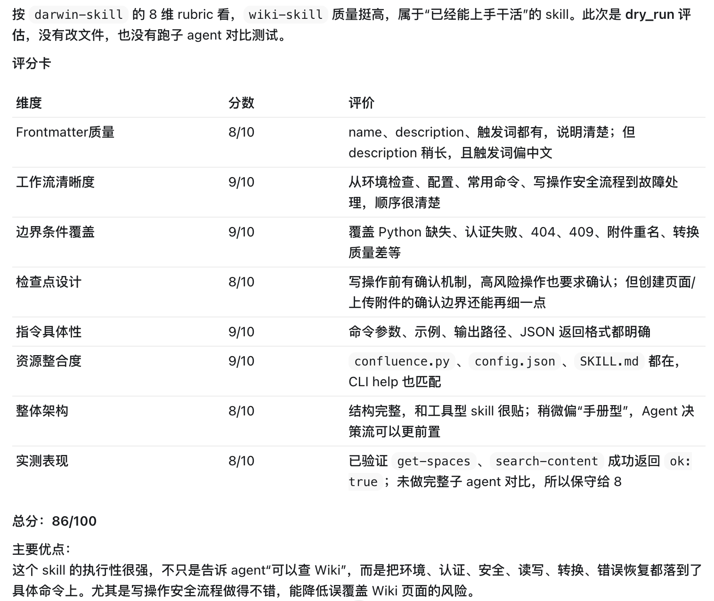
远程怎么连接到本地 Agent
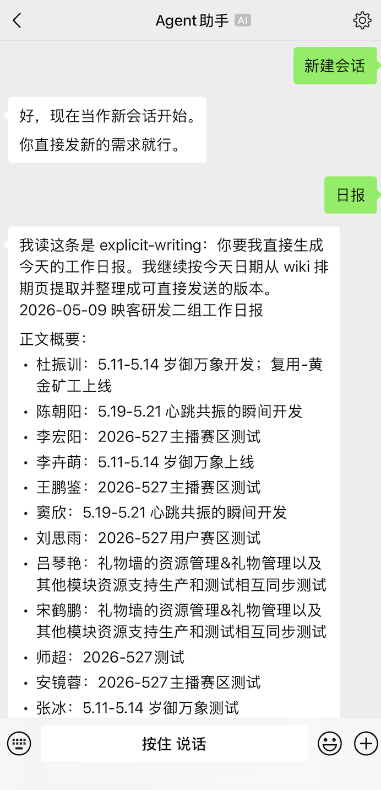
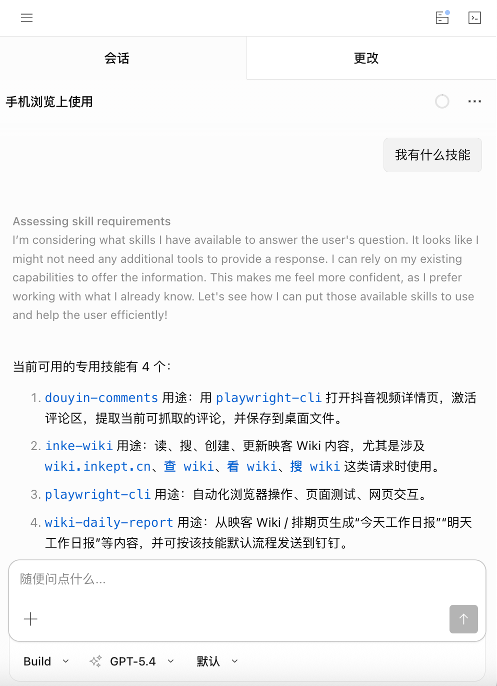
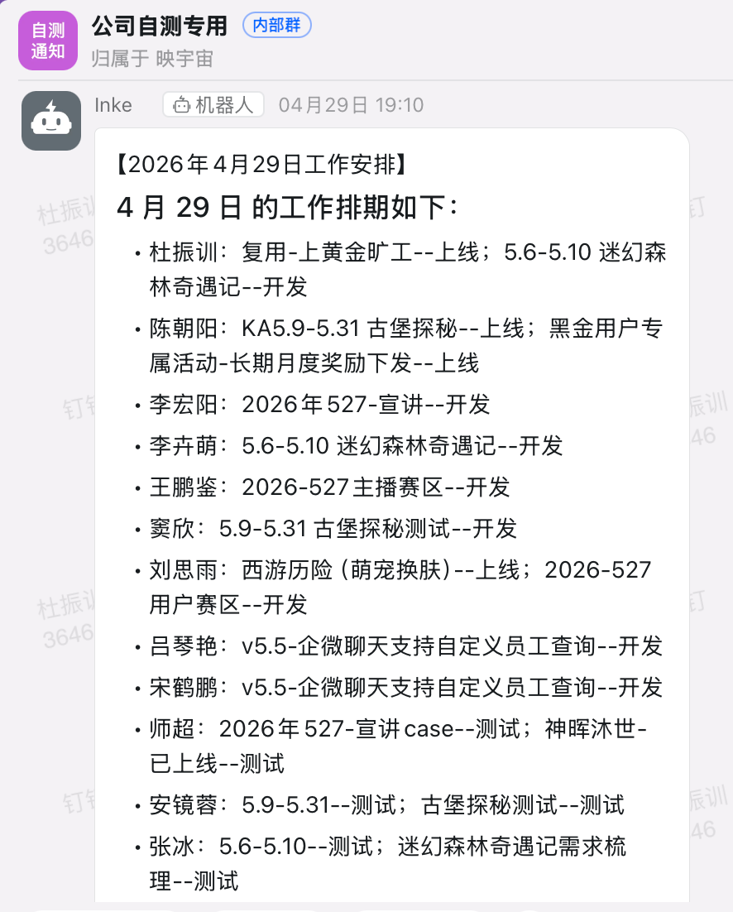
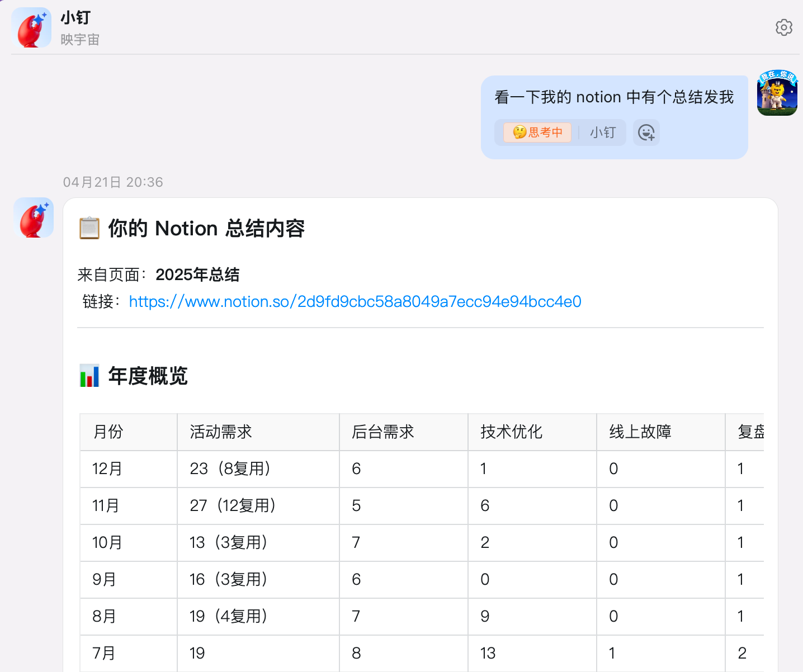
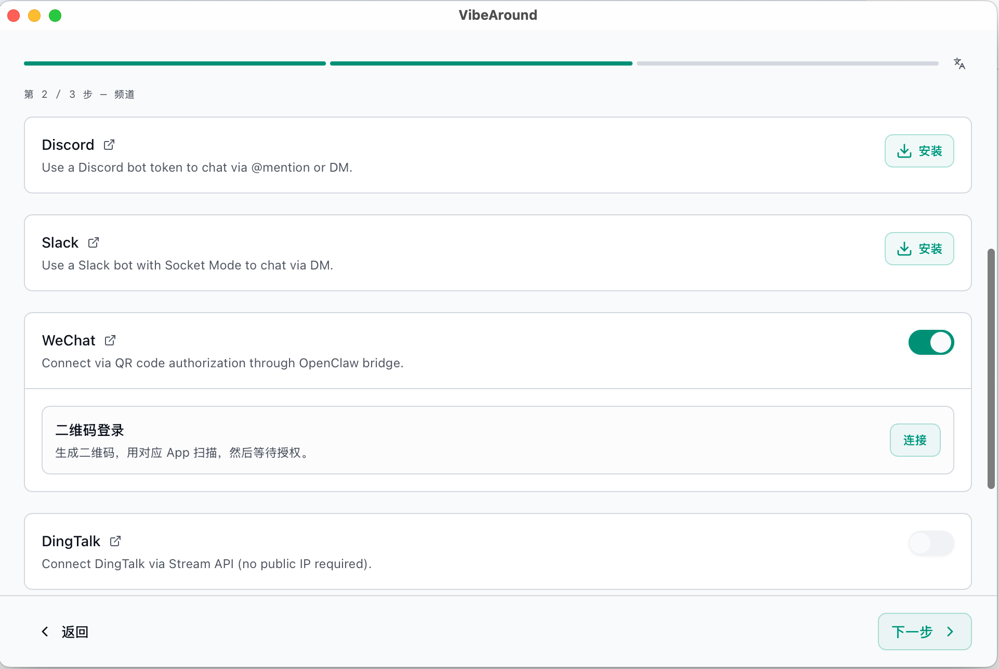
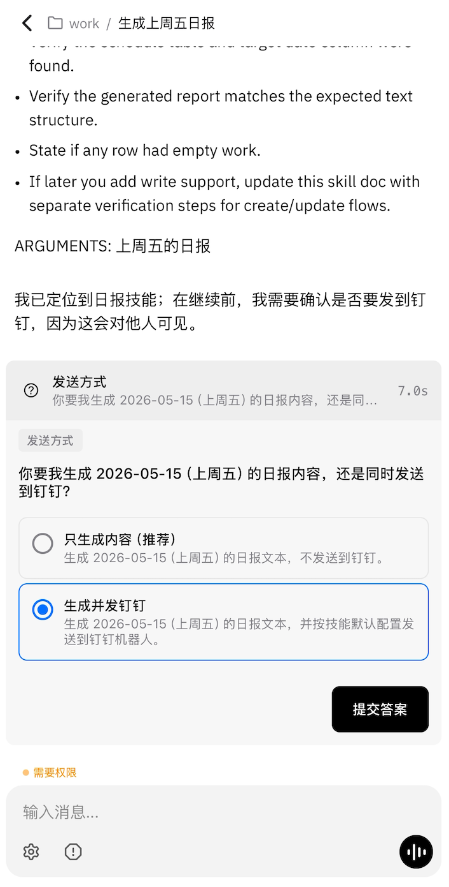
npx oh-my-wechat claude
Skill 的价值：稳定复现经过验证的工作路径
Agent 开发入门
核心闭环：Loop、工具、Todo、子代理、Skill、压缩。
运行规则：权限、Hook、记忆、系统提示词、错误恢复。
任务运行时：任务系统、后台任务、定时调度。
多 Agent 平台：团队、协议、自治、Worktree、MCP。
最小 Agent Loop：让模型持续行动
Agent 不是一次问答，而是「模型思考 → 调工具 → 写回结果 → 再思考」的循环。
模型负责「决定下一步」，程序负责「真实执行」，上下文负责「让下一轮知道发生过什么」。
添加工具：把能力挂到 Agent 上
工具是 Agent 和真实世界之间的接口，必须同时给模型「说明书」和给程序「执行函数」。
- 每个 tool_use 块必须有匹配的 tool_result (通过 tool_use_id 关联)
- user / assistant 消息必须严格交替 (不能连续两条同角色)
- 只接受协议定义的字段 (内部元数据会导致 400 错误)
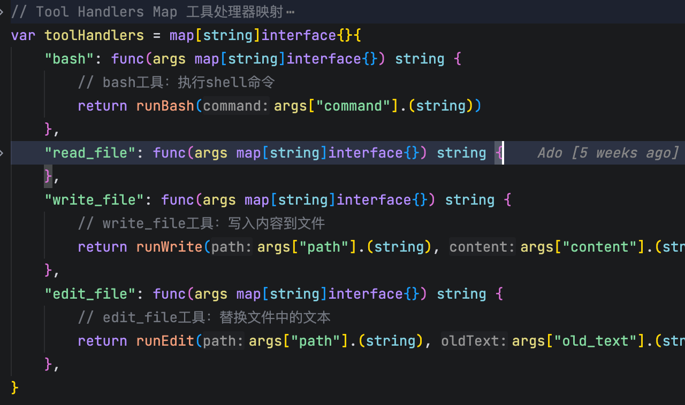
工具不是越多越好，关键是每个工具的用途、输入、风险和返回格式都足够清楚。
Todo 管理：让 Agent 有当前工作记忆
Todo 不是给用户看的装饰，而是给 Agent 自己用的短期工作台。
多步任务容易走一步忘一步。
明明已经做过的检查，会重复再做。
一口气列出很多步骤后，很快又回到即兴发挥
Pending
In Progress
Completed
Todo 的价值不是规划得多漂亮，而是让 Agent 在每一步都有明确焦点，并且能被验证。
子代理：把局部探索放到独立上下文
一个大任务，不一定要塞进一个上下文里做完。
但 agent 可能为了回答这个问题 开始扫仓库、查资料会产生大量中间信息，直接塞进主上下文会很快变乱。
真正有价值的最终答案，可能只有一句话：“这个项目主要是技术分享。”
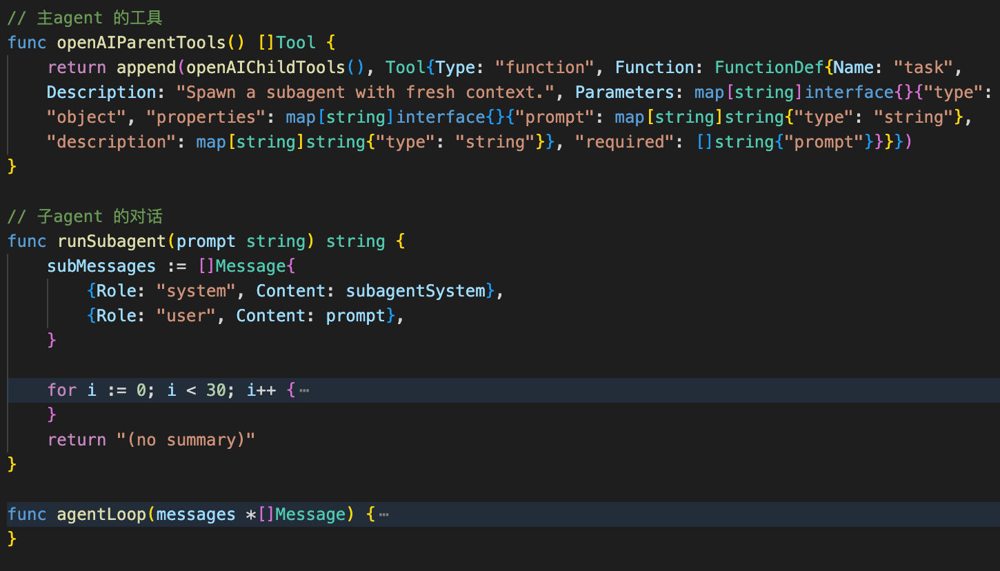
父智能体除了文件读取、搜索、bash 之类的基础工具。它还有派生子智能体的能力
Skill 加载：按需读取能力说明
Skill 是可发现、可按需加载的能力包；常驻的是目录，不是全部正文。
不同任务需要的领域知识不一样
写日报、周报
写活动需求文档
做PPT演示文稿
这是某类任务才需要的做法或知识：skill
这是需要长期记住的事实或偏好：memory
这是更稳定的全局规则：CLAUDE.md|AGENT.md
常驻目录
命中后加载
好 Skill 的第一门槛是「能被正确触发」，第二门槛才是「触发后能稳定执行」。
上下文压缩：保留状态，不保留噪音
压缩不是简单变短，而是把后续继续工作必需的状态留下来。
第 1 层：大结果不直接塞进上下文。写到磁盘，只留预览
第 2 层：旧结果不一直原样保留。替换成简短占位，used tool with id：tool_call_id
第 3 层：整体历史太长时。生成一份连续性摘要
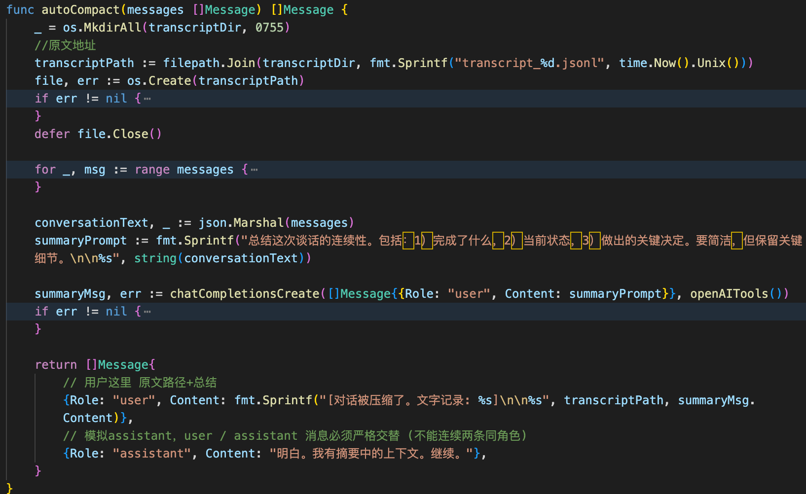
手动压缩和自动压缩复用同一条机制
权限系统：工具调用先过安全闸
“意图”不能直接变成“执行”，中间必须经过权限检查。
第 1 步先看 deny rules。因为有些东西不应该交给“模式”去决定。比如：明显危险的命令、明显越界的路径 这些应该优先挡掉。
第 2 步看 mode。因为模式决定当前会话的大方向。例如在 plan 模式下，系统就应该天然更保守。
第 3 步看 allow rules。有些安全、重复、常见的操作可以直接过。比如：读文件、搜索代码、查看 git 状态
第 4 步才 ask。前面都没命中的灰区，才交给用户。
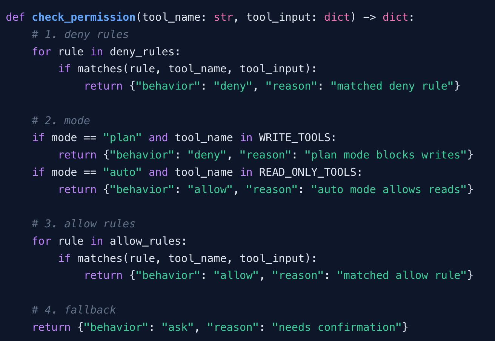
权限判断属于系统责任，不能让模型自己决定「这次应该安全」。
Hook 系统：在关键生命周期插入扩展
Hook 把日志、审计、格式化、通知等横切能力放到生命周期节点上，而不是塞进主循环。
比如 会话开始时打印欢迎信息、工具执行前做一次额外检查、工具执行后补一条审计日志
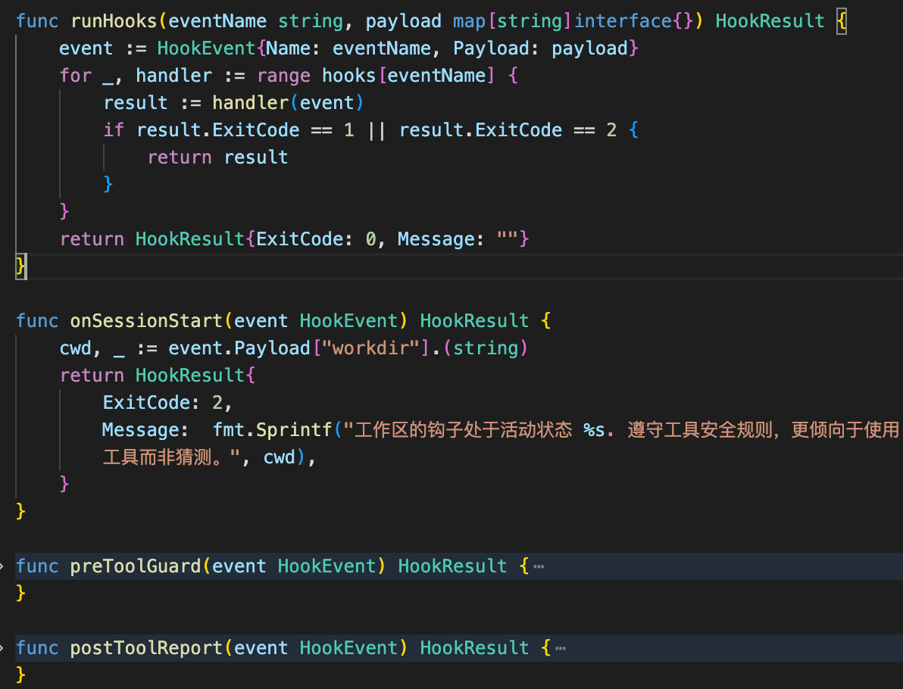
Hook 的价值是让核心循环保持干净，同时给团队留下稳定的扩展点。
记忆系统：只记未来仍有价值的东西
记忆不是聊天记录仓库，而是把未来还会用到的事实、偏好和项目规则保存下来。
文件结构、函数签名、目录布局
当前任务进度
临时分支名、当前 PR 号
修 bug 的具体代码细节
密钥、密码、凭证
好记忆要能回答「下次遇到同类任务，它能少走哪一步弯路？」
系统提示词：用拼装流水线管理规则
Prompt 不是一整坨文本，而是由多层规则按优先级拼装出来的运行配置。
讲解重点：提示词工程到工程化阶段，核心不是写一句神奇 prompt，而是管理规则来源和优先级。
错误恢复：失败要能被理解和重试
好 Agent 不是不失败，而是能把失败转成可理解的状态，并选择下一步恢复动作。
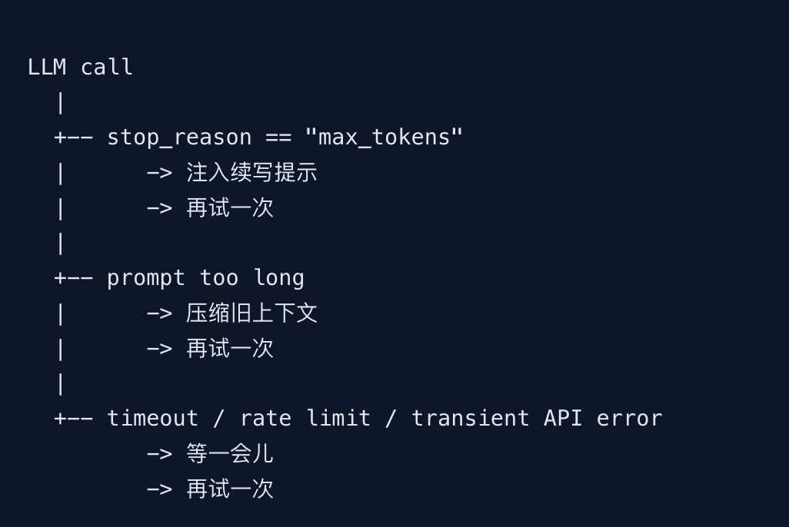
任务系统：把大目标拆成持久工作图
Todo 管当前注意力，任务系统管跨会话、跨角色、可恢复的长期工作。
如果没有专门的任务系统，agent 很容易出现这些问题：
前置工作没做完，就贸然开始后面的任务
某个任务完成以后，不知道解锁了谁
多个 agent 协作时，没有统一任务板可读
所以这一章要做的升级是：
把“会话里的 todo”升级成“可持久化的任务图”。
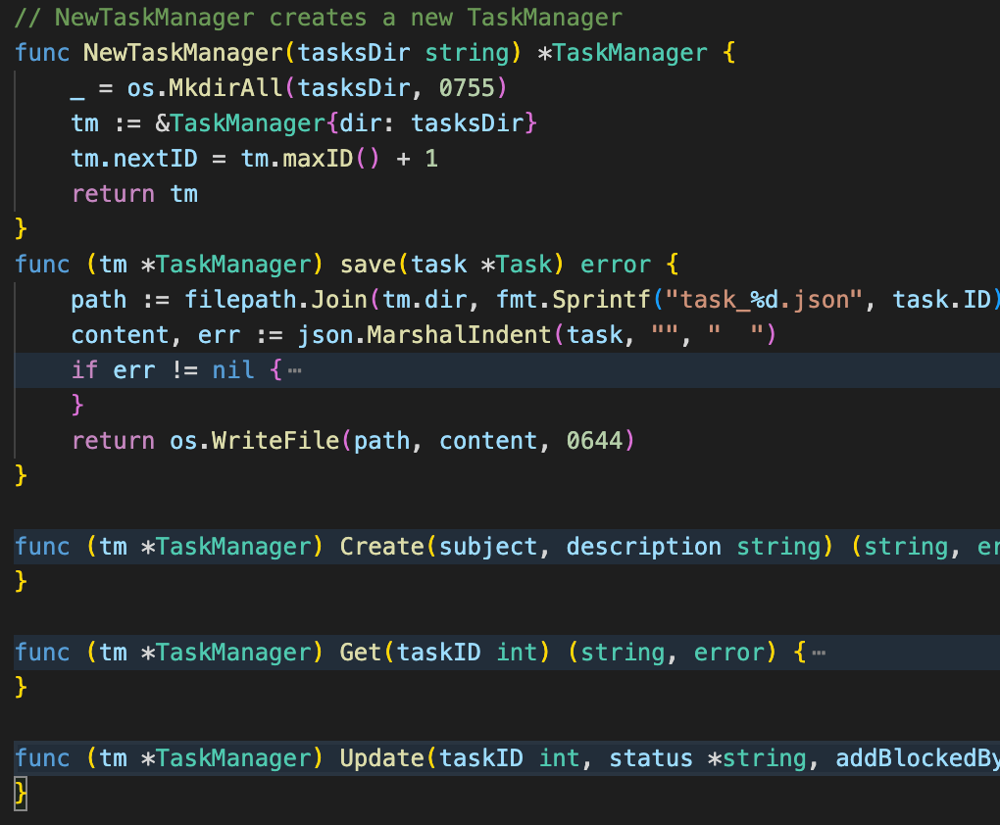
最小工具集：task_create、task_update、task_get、task_list
后台任务：慢操作不阻塞主循环
后台任务让慢操作脱离主循环等待，但结果仍要回到同一套任务和消息系统。
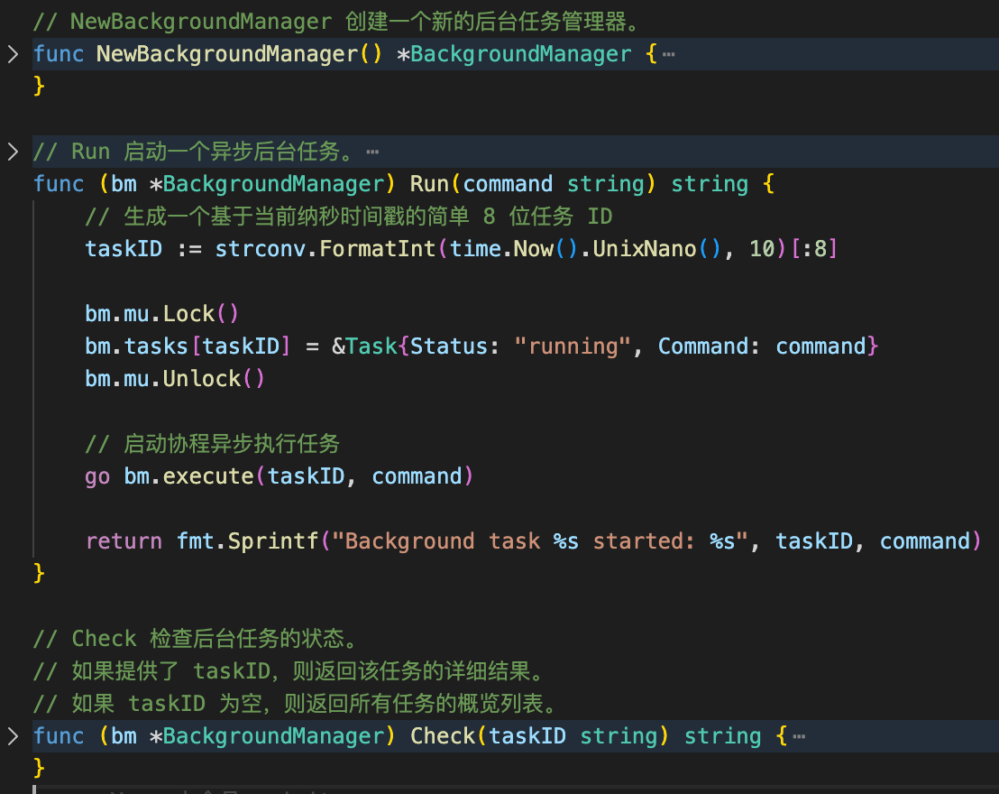
讲解重点：后台任务不是脱离系统单独跑，最终结果必须回到任务状态和上下文里。
定时调度：把未来任务放回 Agent Loop
调度器只负责在未来唤醒 Agent，真正思考和执行仍然进入 Agent Loop。
调度能力的关键是「回到统一运行时」，而不是在定时器里另写一套逻辑。
Agent 团队：让角色长期存在
多 Agent 不是一次性 subagent，而是让不同角色长期存在、拥有职责和状态。
可如果你想做这些事，就不够用了：
让两个 agent 长期分工
让某个 agent 未来收到新任务后继续工作
也就是说，系统现在缺的不是“再开一个模型调用”，而是：一批有身份、能长期存在、能反复协作的队友。
1、先有一份队伍名册
2、spawn 一个持久队友
3、给每个队友一个邮箱，最简单的做法可以直接用 JSONL 文件
4、队友每轮先看邮箱，再继续工作
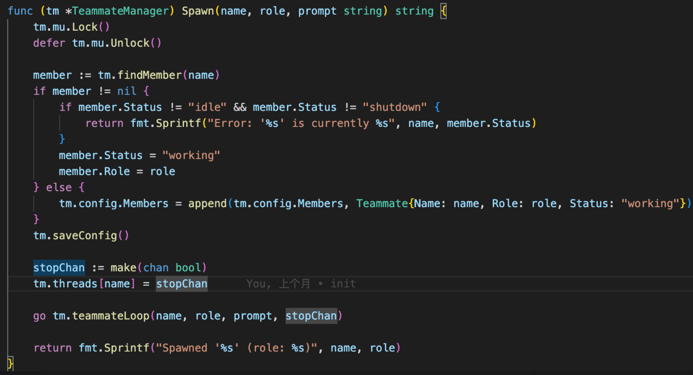
每个队友都应该有自己的 messages 和自己的 inbox。
团队协议：协作要有可追踪规则
有了邮箱以后，团队已经能说话；有了协议以后，团队才开始会“按规矩协作”。
一旦多个请求同时存在，系统很难知道“这条回复对应哪一件事” 最典型的两个场景就是：
队友要不要优雅关机
某个高风险计划要不要先审批
没有协议的多 Agent 只是多条聊天；有协议才是可追踪的协作系统。
自主代理：空闲时自己找活干
自治不是随便发挥，而是在任务板和协议约束下，从 idle 状态主动认领 ready task。
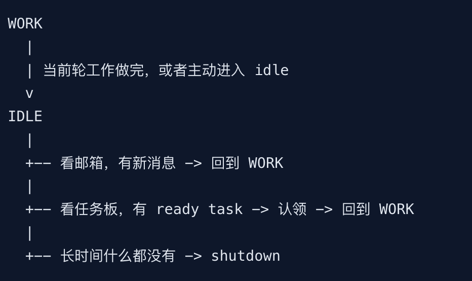
自治的边界来自任务系统和团队协议，不是让 Agent 无限自由发挥。
Worktree 隔离：队友各自在独立工作区动手
多 Agent 真正同时改代码时，需要用 worktree / branch 把工作区隔离开。
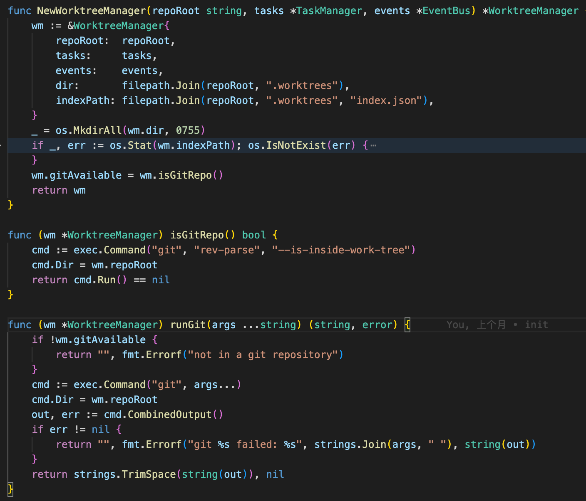
Worktree 降低冲突概率，但不能代替合并前的测试和代码审查。
MCP与插件：把外部能力标准化接入
工具不必都写死在主程序里。外部进程也可以把能力接进你的 agent。
1. 有一个 MCP client、2. 有一个工具名前缀规则、3. 有一个统一路由器
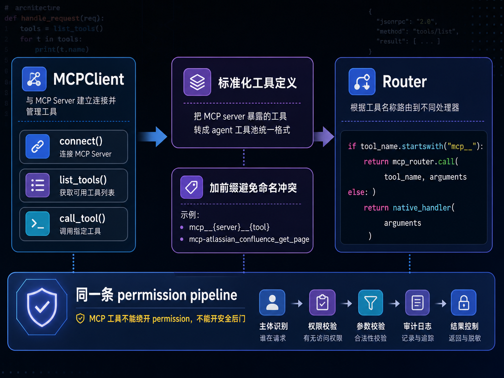
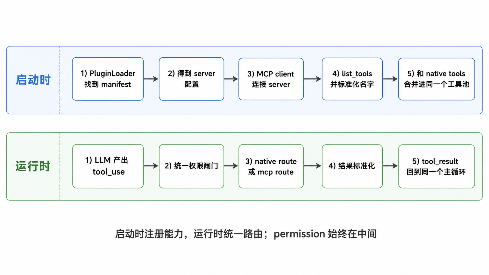
MCP解决的是外部工具怎么通信，plugin 解决的是这些外部工具配置怎么被发现。